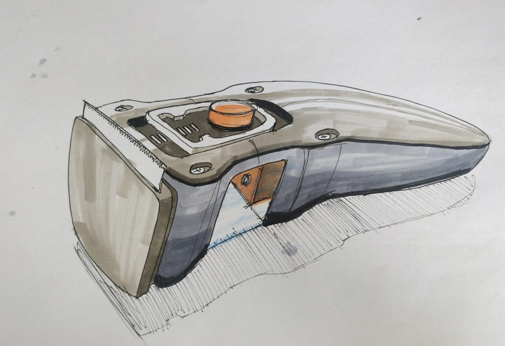
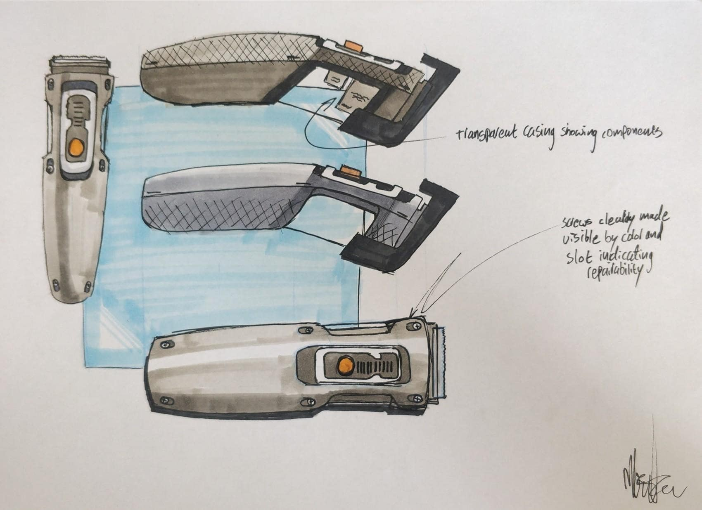
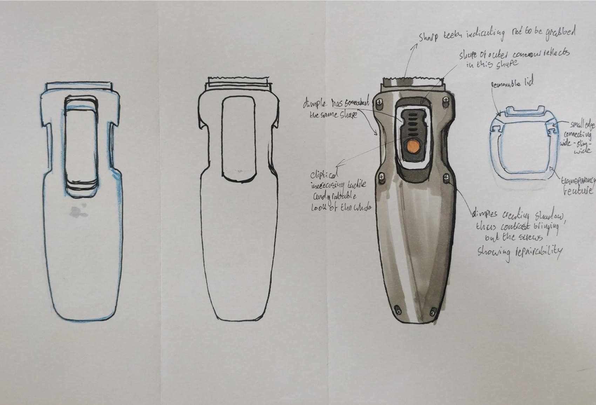

Project bits is a project that explores the possibility of creating consumer electronics products that
are
easily repairable and last a long time without comprimising on the performance of products.
An exploration of a connector which can not be mistaken in the direction it is used and attempts to be an easier
way to connect multiple electronic parts.
An exploration into how to visualize repairability and make a device repairable. Using a beard trimmer as a
prop.


